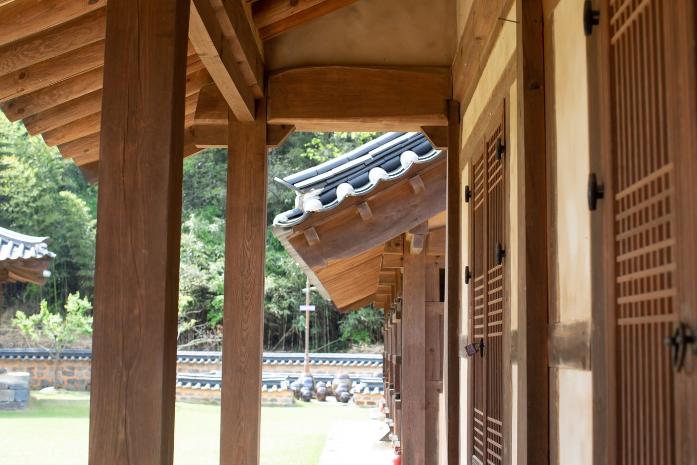
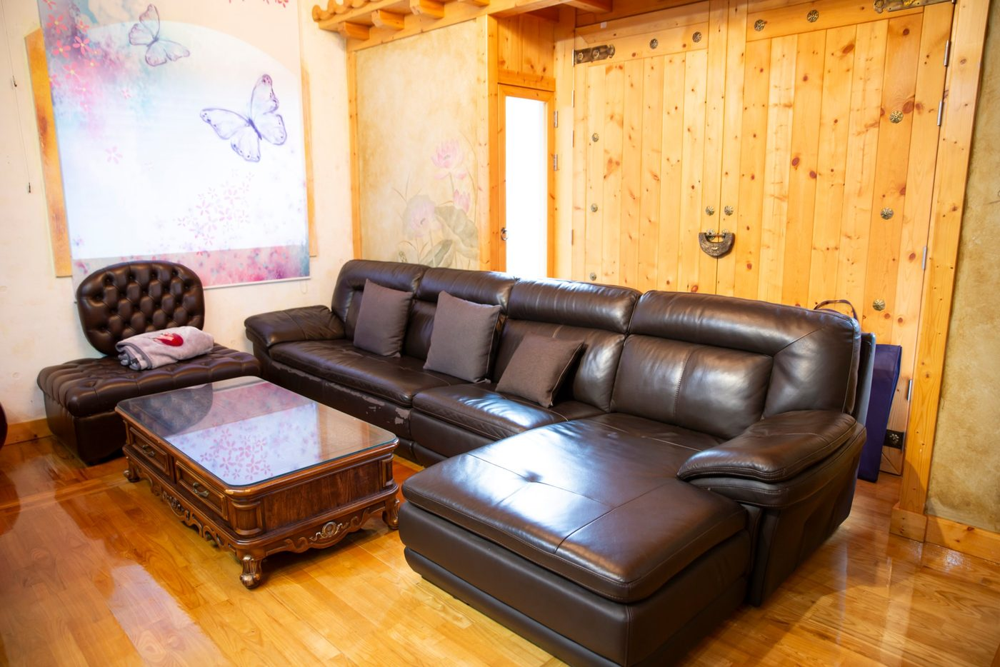
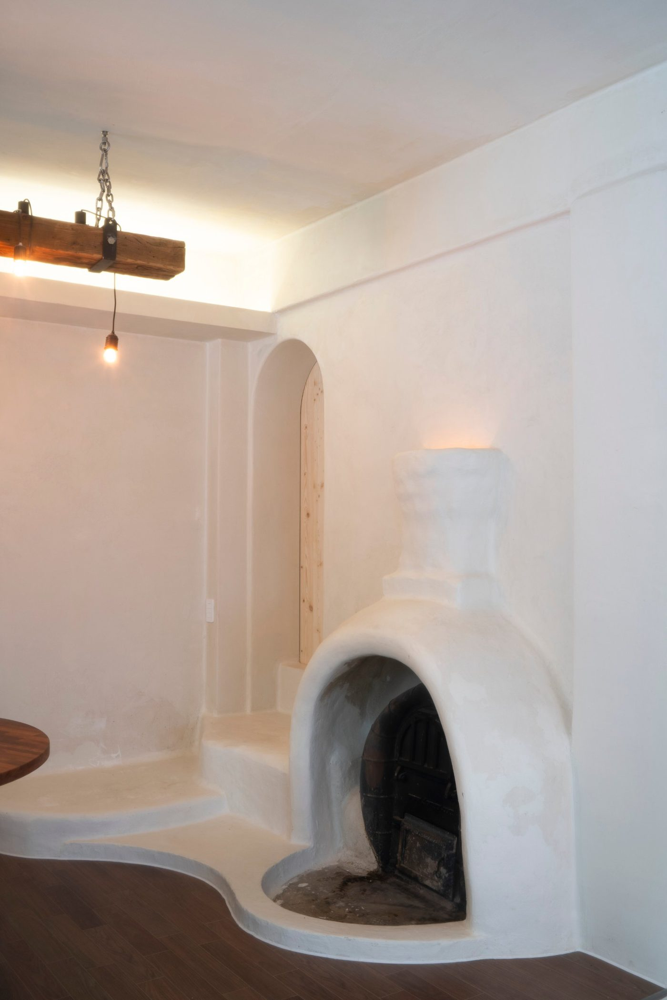
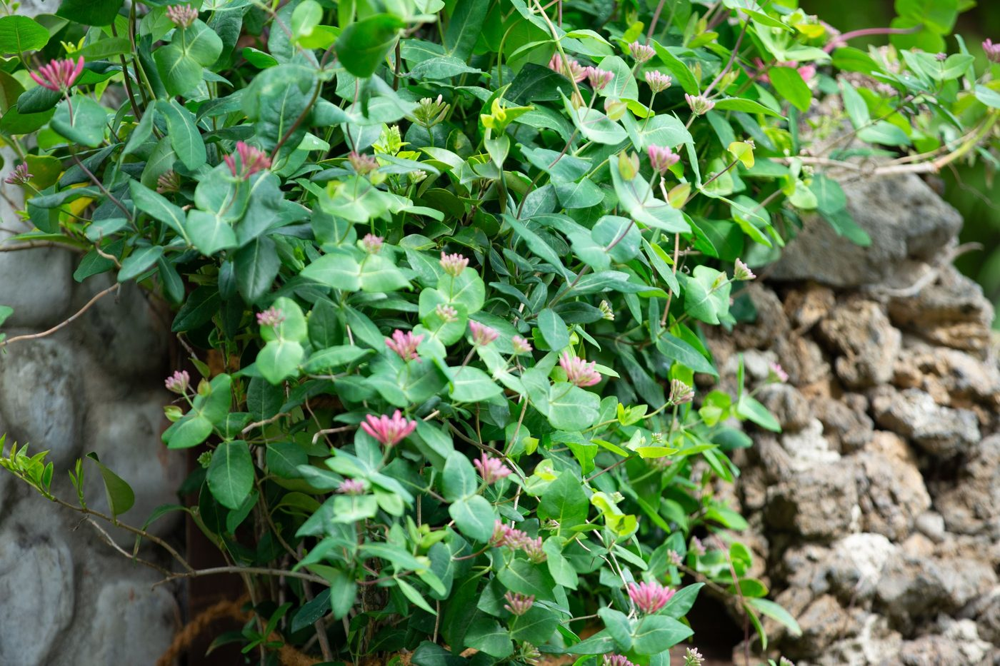
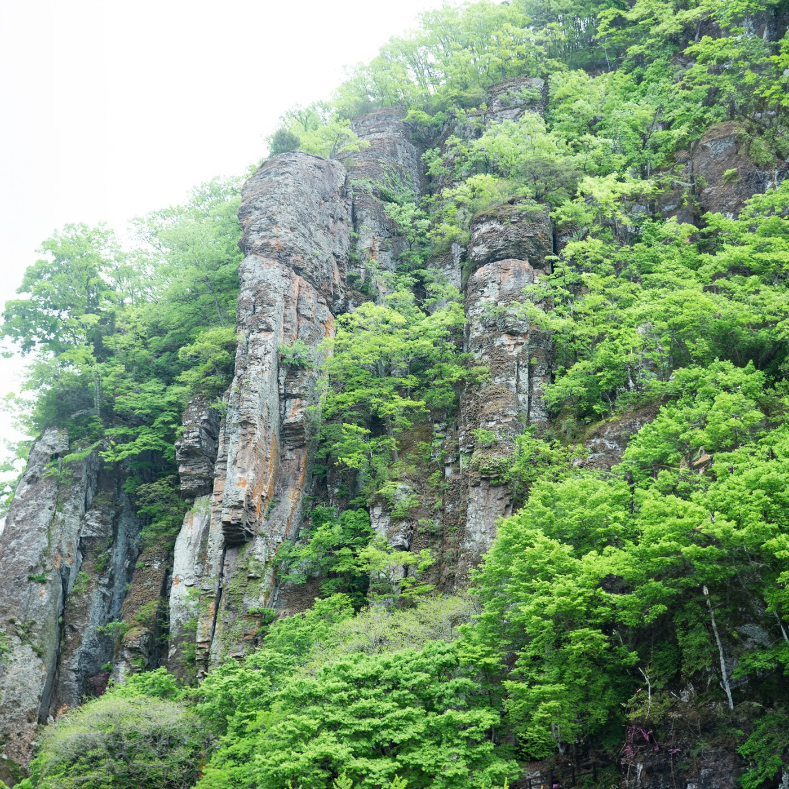
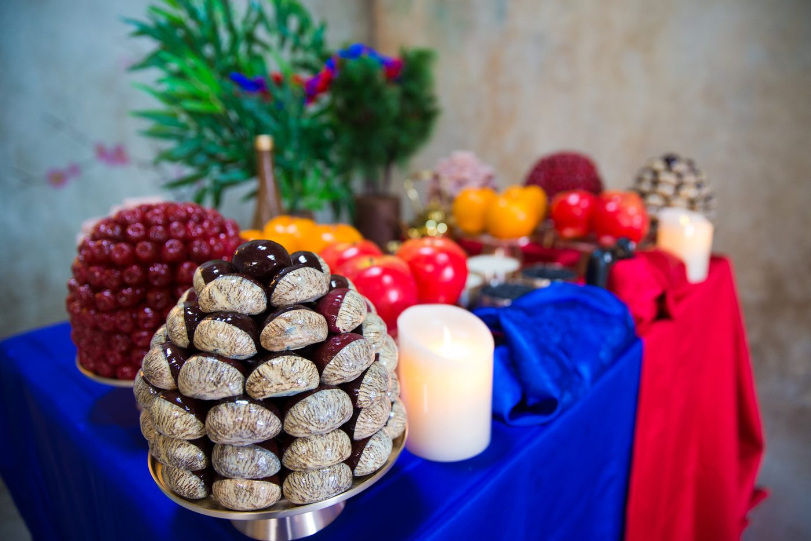

의령점은 1,000평 부지에 한옥 채와 마당, 정원, 야외촬영장이 이어지는 사진관입니다. 촬영은 로비에서 시작해 실내 촬영룸과 마당으로 나갑니다. 이동 거리가 짧아 아이와 어르신이 함께 오셔도 하루가 지치지 않습니다.
로비는 서까래를 드러낸 목조 천장에 원목 마루, 가죽 소파와 오래된 나무 테이블이 놓인 자리입니다. 촬영 전에 앉아 긴장을 푸는 공간이고, 촬영이 끝난 뒤 가족이 잠깐 이야기를 나누는 자리이기도 합니다.

실내 촬영룸은 벽과 창을 비워 두었습니다. 배경을 단순하게 두어야 가족의 표정이 사진의 중심에 섭니다. 룸 옆에는 샤워와 세면이 가능한 공간이 있어 촬영 전후로 옷매무새를 정리하실 수 있습니다.
한옥촬영장은 원목 마루에 둥근 테이블, 책장과 펜던트 조명이 놓인 실내 공간입니다. 비가 오는 날에도 한옥의 결을 그대로 담을 수 있고, 겨울에는 난방이 되는 실내에서 야외 분위기의 컷을 만듭니다.

툇마루를 따라 걸으면 담장과 옹기, 돌담에 기어오른 덩굴과 계절 꽃이 이어집니다. 봄에는 벚꽃길, 여름에는 짙은 초록, 가을에는 감과 억새, 겨울에는 눈 내린 마당. 같은 가족이 해마다 와도 사진이 겹치지 않는 이유입니다.

옥상에 오르면 주상절리 암벽과 숲이 배경이 됩니다. 마당과는 다른, 넓고 조용한 컷을 만들 수 있습니다. 해 질 무렵 빛이 좋습니다.

전통혼례상과 칠순·팔순상은 실제로 차려집니다. 폐백 음식과 촛불, 케이크와 숫자 초까지 준비되어 있어 상을 따로 마련하실 필요가 없습니다.

공간 열한 곳
- 로비 — 서까래와 원목 마루, 가죽 소파
- 실내 촬영룸 — 벽과 창을 비운 단순한 배경, 옆에 세면·샤워 공간
- 야외촬영장 — 툇마루, 담장, 옹기, 마당
- 옥상촬영장 — 주상절리 암벽과 숲
- 의상실 — 드레스와 구두, 소품을 직접 보고 고르는 곳
- 전통혼례상 — 폐백 상차림
- 정원 — 돌담과 덩굴, 계절 꽃
- 칠순·팔순상 — 케이크와 숫자 초
- 펜션 — 촬영장 옆 독채
- 한옥촬영장 — 마루와 책장, 펜던트 조명
- 전경 — 사진관 앞 벚나무길과 산
사진관 앞 도로에는 벚나무가 늘어서 있습니다. 꽃이 피는 열흘 남짓, 마당에서 시작한 촬영을 길 건너까지 이어가기도 합니다.